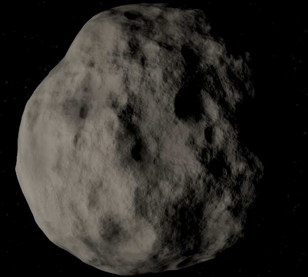
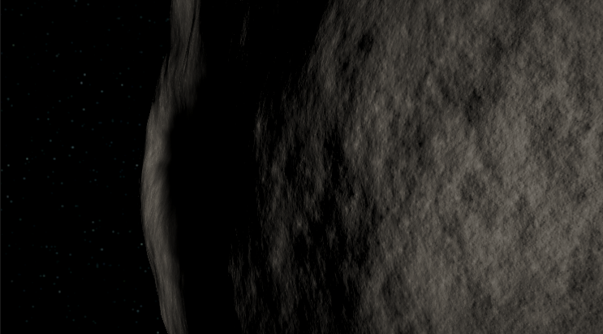
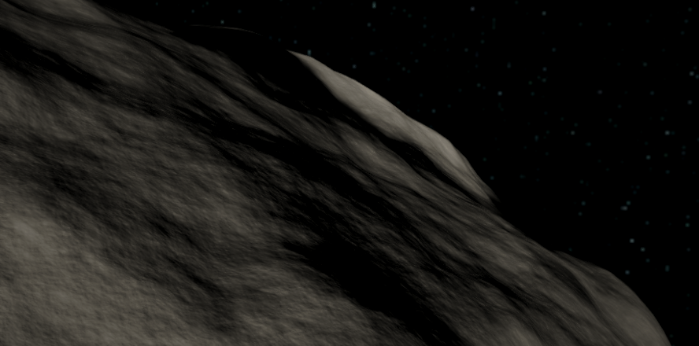
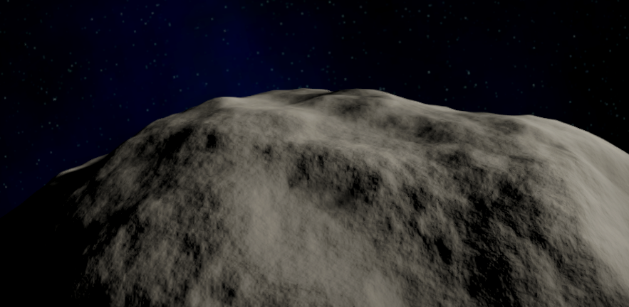
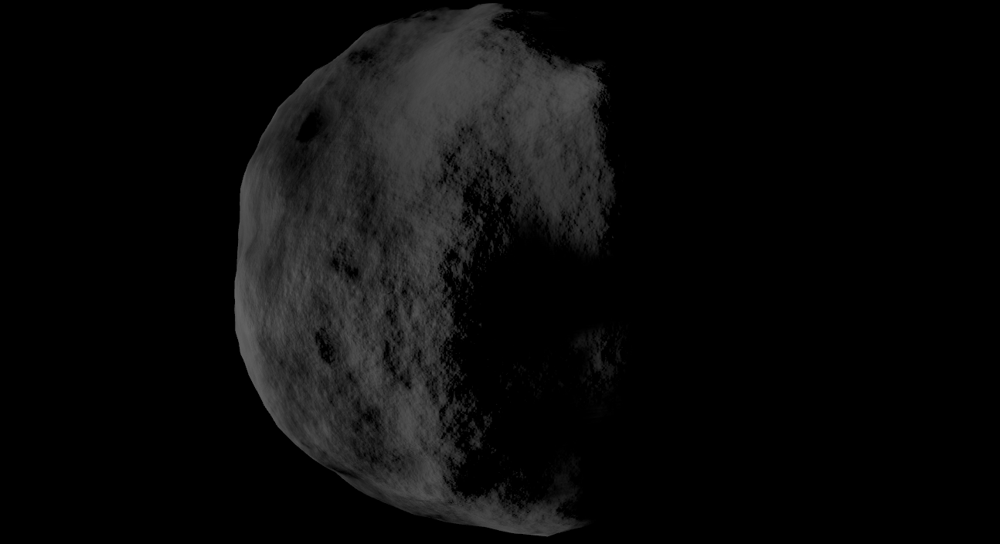
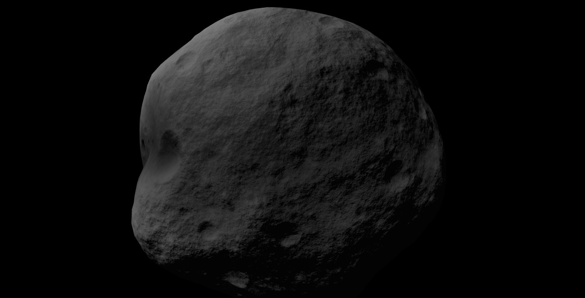
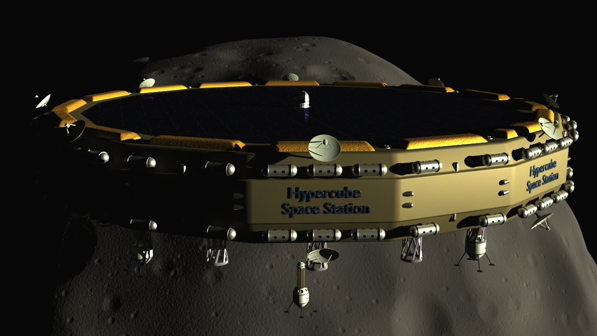
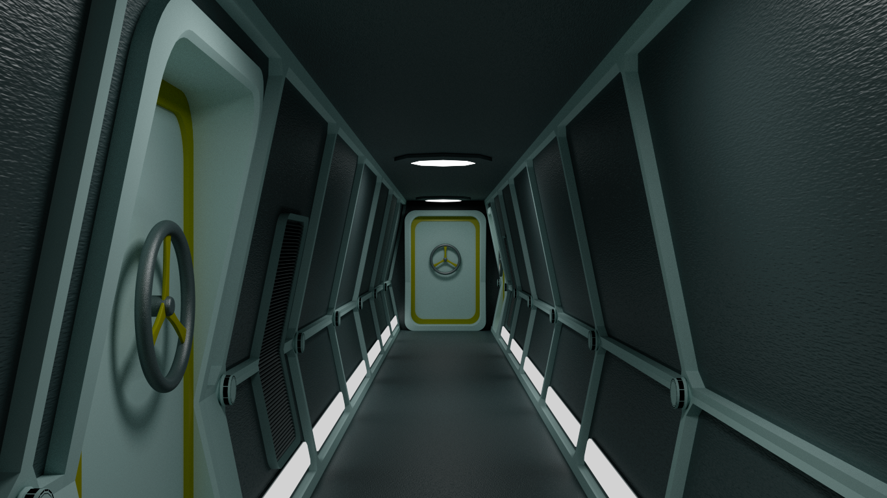
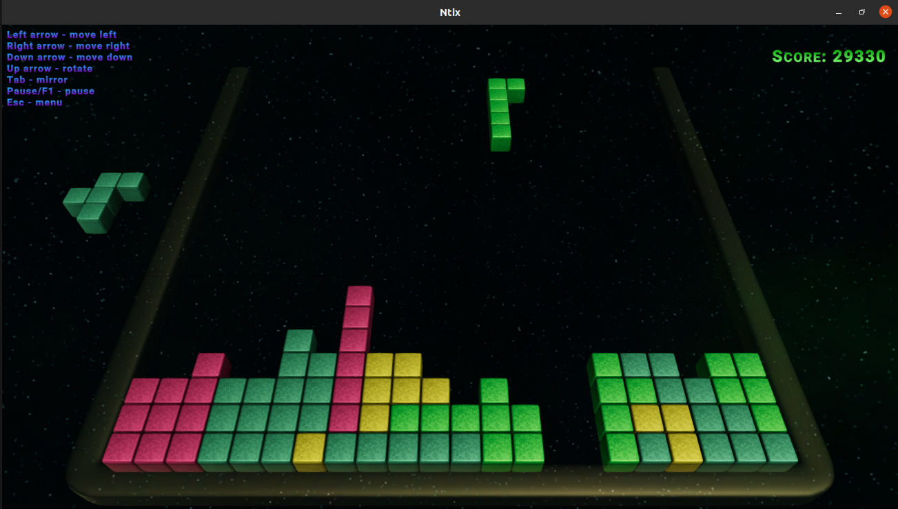
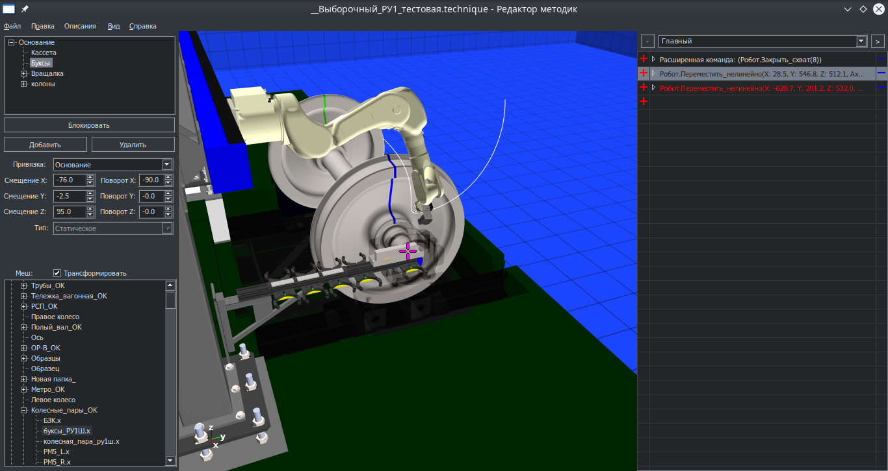

C++ programmer Programming, development
Contacts
Phone: +37367547468
Email: asmgrinder@gmail.com
Languages
Russian - mother tongue
English - can read and translate
Job list
June 2020 - Present
At home
Godot and Unity asteroid version, Ntix (tetris-like game based on N-tamino)
September 2019 - June 2020
Software engineer
Ringtail Studios
theHunter Classic support and improvement
March 2017 - August 2019
At home
Improving Blender modelling skills, procedural asteroid 20+ octaves, Godot engine / OpenGL / Urho3D
November 2009 - March 2017
Votum Ltd(www.votum.ru)
Software engineer
Technique Editor application to calculate and test movements of robotic arm with 6 degrees of freedom.
Math plugin for laser rangemeter profiles collection, reprojection to 3D and correction of laser rangemeter tool.
Math plugin for calculation of railway wheels parameters.
April 2006 - March 2009
Alcost SRL
Software engineer
Defragmenter engine (Defrag API + MFT scanning for fast reading of files list and
their locations). Utility to restore deleted files and partitions
(low level file system parsing, direct read of NTFS / FAT / CDFS /
UDF structures and partition tables, correction of partition table,
support for MBR / GPT).
January 2004 — March 2006
Votum SRL
Software engineer
Software for ultrasonic flaw detector UD4-T. Application for determining
piezoelectric probe parameters, «Thickness meter» application,
«Resonant flaw detector» application, «Wheel pair checking»
application, «Locomotive detail checking».
Key skills
C++11, knowlegde of Win32 API, Unity, Godot engine, basics
of DirectX / OpenGL. Technical objects modelling in Blender.
Knowledge of Windows / Ubuntu Linux / Gentoo Linux. Knowledge of
cross platform frameworks (Unity, Godot engine, Urho3D).
Gallery
Procedural asteroid, value noise, 20+ octaves, Unity, realtime.




Procedural asteroid, value noise, 20+ octaves, Godot engine (texture shadows, auto exposure, tone mapping), realtime.
Video: https://www.youtube.com/watch?v=rMzyrzJRXeM
Project: https://github.com/asmgrinder/godotAsteroid/

Procedural asteroid, value noise, 20+ octaves, OpenGL/Urho3D, realtime.
Video: https://www.youtube.com/watch?v=rx2Aa9UDQPo
Project: https://github.com/asmgrinder/glAsteroid

Space station render (Blender, Cycles)


Ntix, tetris-like game based on N-tamino, Unity.
Project: https://github.com/asmgrinder/Ntix/

Technique Editor
